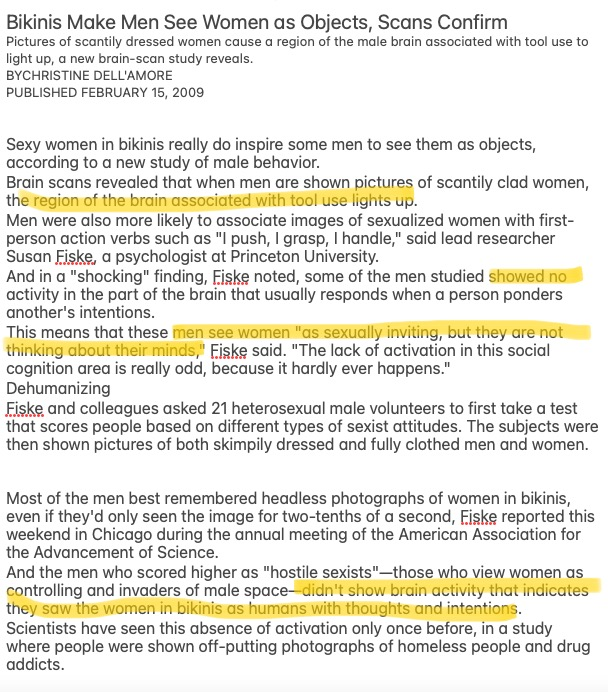
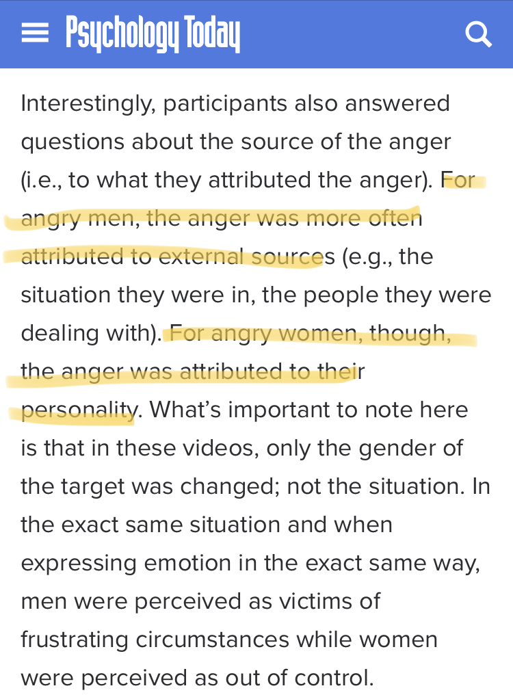

Money and Women

 Money and women should not be complicated. Women should be treated financially as human beings. Historically, they have not been. In America, women could not open a bank account until 1974. Now, women are still oppressed financially. The Pink Tax refers to the abnormally large prices of female-marketed products. This includes women's products such as tampons and women-marketed products, such as pink versus blue products. Regarding period products, although tampons are a hygenic necessity, the average woman on an average period with average-priced tampons spends $1,773.33 on tampons alone in her lifetime. The Wage Gap is a historical pattern of women being paid less than men. A woman, in the same position with the same responsibilities as a man, will get paid 33% less than the man. This is largely contributed to by societal norms of a woman's place. Women are expected to be housewives and stay at home. They are also stereotyped as not as able to do work as well as men. Therefore, men believe women deserve less money than other men.
Money and women should not be complicated. Women should be treated financially as human beings. Historically, they have not been. In America, women could not open a bank account until 1974. Now, women are still oppressed financially. The Pink Tax refers to the abnormally large prices of female-marketed products. This includes women's products such as tampons and women-marketed products, such as pink versus blue products. Regarding period products, although tampons are a hygenic necessity, the average woman on an average period with average-priced tampons spends $1,773.33 on tampons alone in her lifetime. The Wage Gap is a historical pattern of women being paid less than men. A woman, in the same position with the same responsibilities as a man, will get paid 33% less than the man. This is largely contributed to by societal norms of a woman's place. Women are expected to be housewives and stay at home. They are also stereotyped as not as able to do work as well as men. Therefore, men believe women deserve less money than other men.
Feelings and Women
A major issue women face is the disregard of their feelings. Whether this is sexual, emotional, romantic, or professional, women's feelings are widely and wildly neglected. This is because men see women as objects. That is a commonly used phrase, and as most men do perceive women with feelings, they just do not care about them and instead cater to their own egos. However, a study has shown that some extremely sexist men can sometimes see women as literal objects. This is frightening as it suggests how dangerous it can be for women who are regarded as “controlling and invaders of male space”. If a woman comes upon a man who quite literally sees her as an object, that could be terribly dangerous for her. When men do acknowledge women's feelings, it is unfairly. In a study about anger in men versus women, “men were perceived as victims of frustrating circumstances while women were perceived as out of control.” Women are always expected to be calm, cool, and collected no matter what, and men can be emotional babies whenever they want. Alternatively, women are stereotypically the emotional ones. Meet Me @ The Altar says “save the world, don’t even break a sweat” in their song “Hit Like A Girl”, which refers to beauty standards but also to the expectations that women are to be put-together at all times. A major issue women face is the disregard of their feelings. Whether this is sexual, emotional, romantic, or professional, women's feelings are widely and wildly neglected. This is because men see women as objects. That is a commonly used phrase, and as most men do perceive women with feelings, they just do not care about them and instead cater to their own egos. However, a study has shown that some extremely sexist men can sometimes see women as literal objects. This is frightening as it suggests how dangerous it can be for women who are regarded as “controlling and invaders of male space”. If a woman comes upon a man who quite literally sees her as an object, that could be terribly dangerous for her. When men do acknowledge women's feelings, it is unfairly. In a study about anger in men versus women, “men were perceived as victims of frustrating circumstances while women were perceived as out of control.” Women are always expected to be calm, cool, and collected no matter what, and men can be emotional babies whenever they want. Alternatively, women are stereotypically the emotional ones. Meet Me @ The Altar says “save the world, don’t even break a sweat” in their song “Hit Like A Girl”, which refers to beauty standards but also to the expectations that women are to be put-together at all times. Another phrase heard often by feminists is “women can’t enjoy things.” In society, things that women enjoy is often looked down on. Twitch streamer Wilbur Soot once challenged streamer Ph1LzA, “can you name something that teenage girls can be interested in without being made fun of?” And Phil couldn’t. There are so many examples of this, men hating on everything women do. For example, a girl is basic if she wears leggings but trying too hard if she doesn’t. Or countless videos on Tiktok of men picking apart every little thing girls do. One example of this in mass media is what I would call the Teenage Female Star pipeline.
- Step 1: Young girl gets famous very fast with a predominantly young female fanbase.
- Step 2: She gets a lot of unwarranted hate for seemingly no reason, and it usually falls into the “women can never win” scenario. As do her fans.
- Step 3: The hype then dies down and people realize she’s not all that bad and wonder why everyone hated her.
Sexual Assault and Violence Against Women
97% of women aged 18-24 in the UK say they have experienced sexual assault, harassment, or rape. Yet, men still find excuses to not see this a problem with men. Tumblr user “notable-spinster” said “men have such profound cognitive dissonance when it comes to rape. Like when I was young my dad didn’t wane me hanging out with guys because [he] knew “what teenage boys are like” and didn’t trust them with me, but he’s a conservative who thinks feminists are crazy because “not all men” are bad. Men will call women paranoid and resent us for treating men as if they might become dangerous, but if we do get hurt, they’ll turn around and blame us for being stupid and naive. Like, if I don’t go home with a guy because he might be dangerous, I’m sexist and unfairly generalizing men as violent. If I do go and something happens, it’s my fault [for] putting myself in a dangerous position. Men know that they are a danger to us, but they don’t want us to know-except their daughters.”
When I first heard about what happened to Sarah Everard, I wasn’t super freaked out and that’s because this is so normalized. It really shouldn’t be that way. But then I read more and she did everything men tell us to protect us from them and she still got kidnapped, raped, and killed. It is so scary for me that I could do everything in my power and something could still happen. This is not a problem with women. This is a problem with men. 97% of women experience some form of sexual assault, harassment, or rape. 99% of those attacks come from men. As a man, you are more likely to get raped than be accused of false rape. Everyone should care about this. If you say ‘not all men’, you are avoiding the issue and making it about yourself. Not all dogs bite, but enough do that people are afraid of them. Not all men are sexual assaulters/rapists/harassers, but enough are that women are afraid and have to take safety measures. If you say not all men you are showing that you only care about your reputation and not the women who get harassed, assaulted, and raped. We see you ignoring the issue and we see you excusing men’s behavior. And now we’ll be cautious around you too. Because if you aren’t angry about this, you are part of the problem.
This also links to homophobia. Men are homophobic because they can’t stand the idea of getting treated the way the treated women. I once met a man who said he had to sleep in a tent with a man he thought was gay and he joked that at night he “bundled up just in case”. I asked him if he assumed his tent-mate was going to molest him because he thought he was gay. He knew that if he was sleeping with a girl in tent, he might check her out or try to make a move. So he assumed the gay man would do the same to him and it made him uncomfortable. And yet, he knew his actions make himself uncomfortable but he still treats women the same.
One TikTok user once made a video on the statistics of sexual assault against men. She said that not one woman said “yeah but women get raped too” or “not all women rape” and no one questioned the statistics shown. No one victim blamed or brought up false allegations. Yet whenever she had made a video about experiences of women, all of the comments from men are questions the survivors and the statistics or saying “men get raped too”. This difference in reception is a huge problem that undermines all sexual assault cases for women because men make it about themselves or try to disprove the victim. There was a case where the “Judge Says Sexual Assault Victim Is "Overweight" & Likely "Flattered" By The Attention”. Women are often victim-blamed or disregarded when they come forward.
Item 4
...